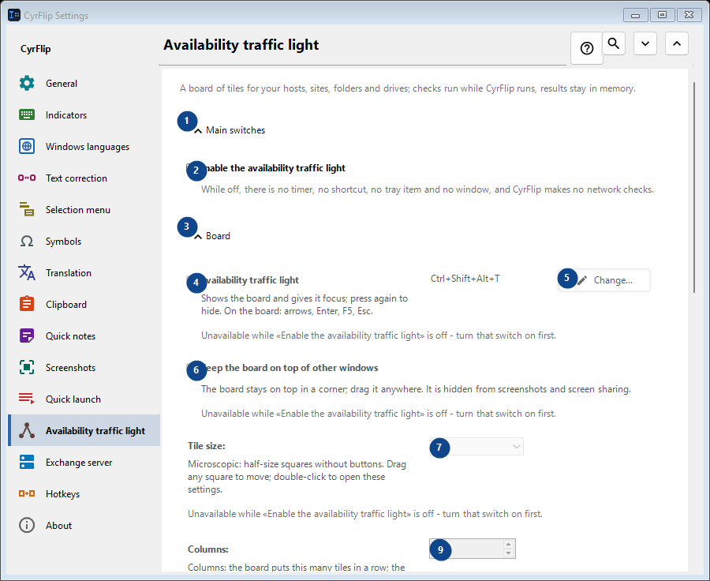
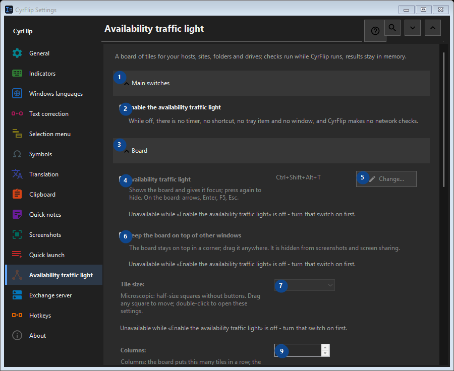

Availability traffic light
What this is for
A board of tiles for your hosts, sites, folders and drives; checks run while CyrFlip runs, results stay in memory.


In this order
Settings apply immediately. There is no required order; use the groups below.
The elements
1. Main switches
Use this command when you need the action named above. Review any confirmation before accepting it.
Your shortcuts2. Enable the availability traffic light
While off, there is no timer, no shortcut, no tray item and no window, and CyrFlip makes no network checks.
Your shortcuts3. Board
Use this command when you need the action named above. Review any confirmation before accepting it.
Your shortcuts4. Availability traffic light
Unavailable while «Enable the availability traffic light» is off - turn that switch on first. This control is currently unavailable. Enable its feature or select an entry first.
Your shortcuts5. Change - Availability traffic light
Unavailable while «Enable the availability traffic light» is off - turn that switch on first. This control is currently unavailable. Enable its feature or select an entry first.
Your shortcuts6. Keep the board on top of other windows
Unavailable while «Enable the availability traffic light» is off - turn that switch on first. This control is currently unavailable. Enable its feature or select an entry first.
Your shortcuts7. Tile size
Unavailable while «Enable the availability traffic light» is off - turn that switch on first. This control is currently unavailable. Enable its feature or select an entry first.
Your shortcuts8. Columns
Unavailable while «Enable the availability traffic light» is off - turn that switch on first. This control is currently unavailable. Enable its feature or select an entry first.
Your shortcuts9. Unavailable while «Enable the availability traffic light» is off - turn that switch on first.
Choose or enter the value for the adjacent label. Review it before continuing. This control is currently unavailable. Enable its feature or select an entry first.
Your shortcuts10. Board window transparency
Unavailable while «Enable the availability traffic light» is off - turn that switch on first. This control is currently unavailable. Enable its feature or select an entry first.
Your shortcuts11. Show the board
Unavailable while «Enable the availability traffic light» is off - turn that switch on first. This control is currently unavailable. Enable its feature or select an entry first.
Your shortcuts12. Targets
Use this command when you need the action named above. Review any confirmation before accepting it.
Your shortcuts13. Address
Unavailable while «Enable the availability traffic light» is off - turn that switch on first. This control is currently unavailable. Enable its feature or select an entry first.
Your shortcuts14. Add
Unavailable while «Enable the availability traffic light» is off - turn that switch on first. This control is currently unavailable. Enable its feature or select an entry first.
Your shortcuts15. Details...
Unavailable while «Enable the availability traffic light» is off - turn that switch on first. This control is currently unavailable. Enable its feature or select an entry first.
Your shortcuts16. Check everything now
Unavailable while «Enable the availability traffic light» is off - turn that switch on first. This control is currently unavailable. Enable its feature or select an entry first.
Your shortcuts17. Change history
Use this command when you need the action named above. Review any confirmation before accepting it.
Your shortcuts18. Open the history file
Unavailable while «Enable the availability traffic light» is off - turn that switch on first. This control is currently unavailable. Enable its feature or select an entry first.
Your shortcuts19. Show in folder
Unavailable while «Enable the availability traffic light» is off - turn that switch on first. This control is currently unavailable. Enable its feature or select an entry first.
Your shortcuts20. Clear the history...
Unavailable while «Enable the availability traffic light» is off - turn that switch on first. This control is currently unavailable. Enable its feature or select an entry first.
Your shortcuts